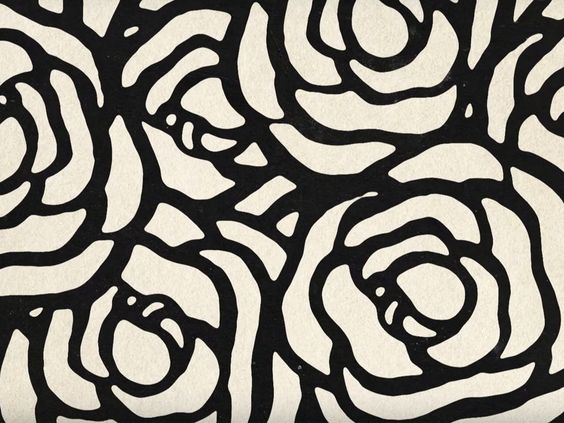
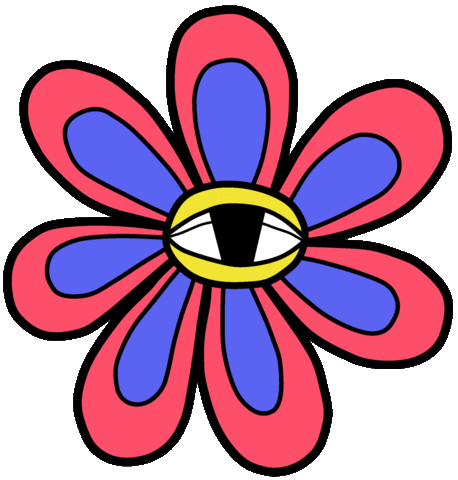
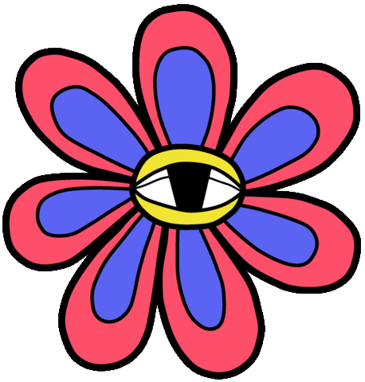
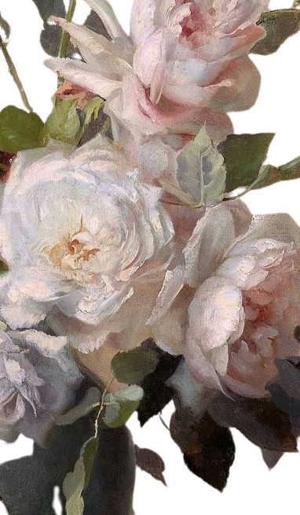
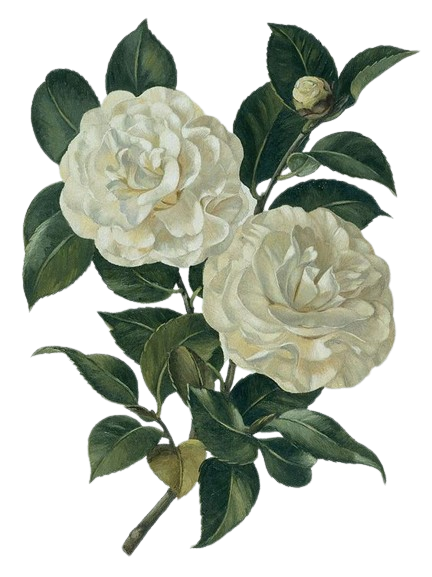

 

 Camellia, genus of evergreen shrubs or small trees in the Camellia family. Leaves thickly leathery, elliptic, apex slightly acute, base broadly cuneate, margin serrate; Petals are bowl-shaped; The fruit is spherical in shape. Camellia has no obvious dormant period throughout the year, and the flowering period is longer, from October to May of the next year, and the full flowering period is in January to March. Camellia, because its leaves like tea, so named camellia, Ming Dynasty Li Shizhen also said its leaf tea, and can be used as tea drink, so tea name.Hyacinth is a perennial herb. Underground bulb spherical or oblate spherical, its diameter about 5 ~ 10 cm, the outer skin purplish red, tea brown or gray. Leaves basal, 4-8, thickly concave, ribbon-lanceolate. Flower stems large spring drawn from center of leaf stem, hollow or cylindrical, slightly higher than leaves, racemes, funnel-shaped, base of florets tubular, upper quadrifid, recurved. The flowers are red, white, yellow, blue, purple and other colors, there are double petal varieties, fragrant. Capsule spherical, rarely natural fruit.
Camellia, genus of evergreen shrubs or small trees in the Camellia family. Leaves thickly leathery, elliptic, apex slightly acute, base broadly cuneate, margin serrate; Petals are bowl-shaped; The fruit is spherical in shape. Camellia has no obvious dormant period throughout the year, and the flowering period is longer, from October to May of the next year, and the full flowering period is in January to March. Camellia, because its leaves like tea, so named camellia, Ming Dynasty Li Shizhen also said its leaf tea, and can be used as tea drink, so tea name.Hyacinth is a perennial herb. Underground bulb spherical or oblate spherical, its diameter about 5 ~ 10 cm, the outer skin purplish red, tea brown or gray. Leaves basal, 4-8, thickly concave, ribbon-lanceolate. Flower stems large spring drawn from center of leaf stem, hollow or cylindrical, slightly higher than leaves, racemes, funnel-shaped, base of florets tubular, upper quadrifid, recurved. The flowers are red, white, yellow, blue, purple and other colors, there are double petal varieties, fragrant. Capsule spherical, rarely natural fruit.
Hyacinthis a perennial herb. Underground bulb spherical or oblate spherical, its diameter about 5 ~ 10 cm, the outer skin purplish red, tea brown or gray. Leaves basal, 4-8, thickly concave, ribbon-lanceolate. Flower stems large spring drawn from center of leaf stem, hollow or cylindrical, slightly higher than leaves, racemes, funnel-shaped, base of florets tubular, upper quadrifid, recurved. The flowers are red, white, yellow, blue, purple and other colors, there are double petal varieties, fragrant. Capsule spherical, rarely natural fruit.


click me!